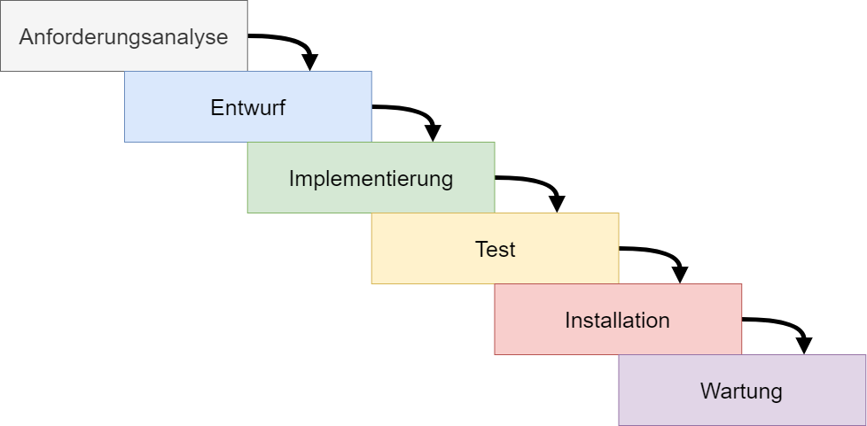
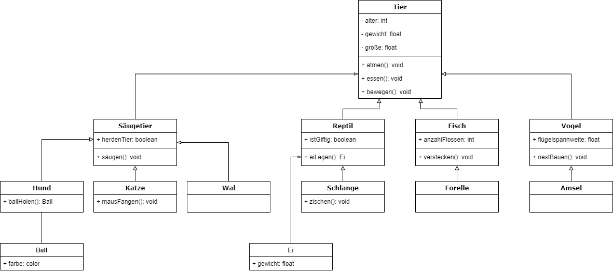
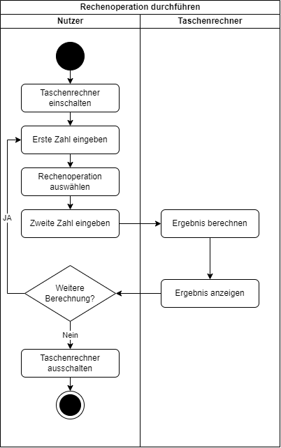

Einführung - Hausbau nach Plan
Stell dir vor, du möchtest ein Haus bauen - wie gehst du vor? Was machst du als Erstes? Wahrscheinlich würdest du nicht direkt mit dem bauen anfangen, sondern zunächst einen Plan erstellen. Du machst dir Gedanken, welche Anforderungen das Haus erfüllen muss, dann würdest du einen Grundriss zeichnen, das Material besorgen und dann erst anfangen das Haus zu bauen. Fertig, oder? Nein, am Ende würdest du noch dafür sorgen, dass alles gut dokumentiert ist. Denn wenn du in ein paar Jahren einen Wasserrohrbruch hast, möchtest du wissen, wo genau die Rohre entlang laufen oder wenn du die Zimmertüre an einer anderen Stelle haben möchtest, dann musst du wissen, wo genau in der Wand die Kabel entlang laufen.
Dieses Vorgehen lässt sich genau so auf die Softwareentwicklung übertragen. Wenn du ein Software-Projekt umsetzen möchtest, ist es nicht sonderlich sinnvoll, direkt mit dem Programmieren anzufangen, ohne einen Plan zu haben. Wie beim Hausbau muss erst eine Analyse der Anforderungen an die Software erstellt werden. Danach kann ein Konzept erstellt werden, welches anschließend im Code umgesetzt wird. Abschließend (oder am besten währenddessen) muss eine Dokumentation erstellt werden, damit man auch nach einiger Zeit das Programm noch erweitern oder korrigieren kann.
In diesem Abschnitt beschäftigen wir uns mit der Konzeption und der Dokumentation von objektorientierter Software. Du lernst in diesem Abschnitt:
- Wie man bei der Konzeption von Software vorgeht
- Was es mit der Unified Markup Language (kurz: UML) auf sich hat
- Wie du Klassendiagramme zur Konzeption und Dokumentation einsetzen kannst
- Wie du mithilfe von Aktivitätsdiagrammen den Programmablauf konzipieren und darstellen kannst
- Wie du mithilfe von Javadoc deinen Code automatisiert dokumentieren kannst
Einführung in die strukturierte Softwareentwicklung
Als Programmieranfänger habt ihr bisher vielleicht schon einige Erfahrungen mit dem Schreiben von Code gesammelt. Möglicherweise sah euer Vorgehen dabei so aus:
- Eine Idee für ein Programm haben
- Direkt anfangen zu coden
- Wenn etwas nicht funktioniert, durch Ausprobieren eine Lösung finden
- Das Programm so lange anpassen, bis es irgendwie läuft
Diese Herangehensweise mag für kleine Projekte ausreichen. Bei größeren und komplexeren Software-Projekten stößt man damit jedoch schnell an Grenzen:
- Der Code wird unübersichtlich und schwer zu warten
- Änderungen und Erweiterungen sind aufwändig
- Fehler schleichen sich leicht ein und sind schwer zu finden
- Die Zusammenarbeit im Team wird erschwert
Um diese Probleme zu vermeiden, haben sich in der professionellen Softwareentwicklung strukturierte Vorgehensweisen etabliert. Diese Vorgehensweisen bestehen in großen Teilen aus denselben Elementen: Analyse, Entwurf, Implementierung, Test, Installation und Wartung. Ein sehr klassisches und weit verbreitetes Vorgehen ist zum Beispiel das Wasserfall-Konzept. Hier werden diese Elemente einfach nacheinander abgearbeitet:

Die zwei Elemente, welche wir uns in diesem Kapitel genauer ansehen möchten, sind die Anforderungsanalyse und der Entwurf (auch Konzept oder Design genannt). Bei der Anforderungsanalyse geht es darum zunächst die Anforderungen an das Programm zu ermitteln und diese einfach zu modellieren. Beim Entwurf geht es darum, die Ergebnisse der Analyse zu nutzen, um die technische Umsetzung zu modellieren bzw. entwerfen.
In diesem Kapitel beschäftigen wir uns mit der Objektorientierten Analyse (OOA) und dem Objektorientierten Design (OOD). Dabei handelt es sich um objektorientierte Varianten der Anforderungsanalyse und des Softwareentwurfs. Beide Phasen nutzen objektorientierte Prinzipien wie Kapselung, Vererbung und Polymorphismus, um bereits in der Analyse- und Design-Phase einen objektorientierten Entwurf zu entwickeln. Indem bereits bei der Analyse und im Design objektorientierte Prinzipien angewendet werden, ist der Übergang zur Umsetzung in einem objektorientierten Programm später einfacher.
Es gibt verschiedene Vorgehensmodelle für Softwareentwicklung. Einige davon wirst du im Laufe des Studiums ausführlich kennenlernen. Für den Anfang folgen wir diesem einfachen Ablauf:
- Konzeption: Analyse der Anforderungen an die Software und Entwicklung eines Softwareentwurfs
- Implementierung: Umsetzung des Softwareentwurfs.
- Dokumentation: Dokumentation des Aufbaus der Software (während oder nach der Implementierung)
Konzeption
Objektorientierte Analyse
Der erste Schritt in der Softwareentwicklung ist die Anforderungsanalyse. Die Objektorientierte Analyse konzentriert sich darauf, die Anforderungen eines Systems zu verstehen und in ein Modell zu übersetzen, das die reale Welt widerspiegelt. Dabei werden Objekte, ihre Eigenschaften und Beziehungen identifiziert, die das zu entwickelnde System repräsentieren. Diese Phase hilft dir, ein klares Verständnis des Problems zu erlangen, bevor du mit der technischen Umsetzung beginnen.
Der Prozess der OOA umfasst folgende Schritte:
1. Anforderungserhebung
Bei der Anforderungserhebung geht es darum, die Anforderungen an die Software zu sammeln, zu definieren und zu verstehen. Dies erfolgt zum Beispiel durch Interviews mit den Stakeholdern (Auftraggeber/Kunden) oder späteren Nutzern der Software.
Stell dir vor, du erhältst den Auftrag, einen Taschenrechner zu programmieren. Bevor du anfängst, musst du erstmal mit dem Auftraggeber klären, was der Taschenrechner alles können soll. Reichen die einfachen arithmetischen Operationen (Addition, Subtraktion, Multiplikation und Division) oder sollen weitere Funktionen hinzugefügt werden? Welche Designvorgaben gibt es für den Taschenrechner? Wer wird den Taschenrechner später nutzen? ...
2. Identifikation von Objekten und Klassen
Bei diesem Schritt geht es darum aus den Anforderungen Objekte abzuleiten, die deine Software braucht. Ähnliche Objekte können in Klassen gruppiert werden. Außerdem können bereits Attribute und Methoden für Klassen definiert werden. Bei diesem Schritt müssen noch nicht alle technischen Details geklärt sein. Ziel ist es, einen ersten Überblick und eine erste Struktur zu erstellen - die auch noch Lücken haben kann.
Bei unserem Taschenrechner könnte das folgendermaßen aussehen: Wir erinnern uns - die Objektorientierte Programmierung versucht Programme so zu entwickeln, dass sie echte Objekte aus der realen Welt beschreibt. Aus welchen Objekten besteht ein Taschenrechner? Mehrere Tasten (Zahlen 0-9, +, -, *, :, Komma, =, Eingabe löschen, ...), ein Display und eine Fläche auf der alles angeordnet ist. Eine erste Übersicht könnte somit folgendermaßen aussehen:
- Fläche
- Attribut: Tasten[] tasten
- Attribut: Display display
- Methode: void anzeigen()
- Display
- Attribut: String text
- Methode: void anzeigen()
- Taste
- Attribut: String label
- Methode: void anzeigen()
- Methode: void drücken()
In dieser Liste habe ich mir einen ersten Überblick über den Aufbau des Programms geschaffen. Ich habe die Klassen Fläche, Display und Taste mit diversen Attributen und Methoden definiert. Diese Liste ist nicht vollständig ausgearbeitet, aber ein guter erster Entwurf.
3. Modellierung von Beziehungen
Im nächsten Schritt geht es darum, Beziehungen zwischen den einzelnen Klassen herauszuarbeiten. Dabei gibt es 4 Arten von Beziehungen: Assoziation, Vererbung, Aggregation und Komposition. Mehr zu diesen Beziehungen erfährst du weiter unten im Abschnitt Beziehungen.
Bei unserem Taschenrechner liegt eine sogenannte Komposition vor. Die Komposition beschreibt eine Beziehung zwischen einem Ganzen und seinen Teilen, wobei das Ganze nur zusammen mit seinen Teilen, wobei weder das Ganze noch die Teile unabhängig voneinander existieren können. Das Ganze ist bei dem Taschenrechner die Fläche und die Teile, aus denen die Fläche besteht, sind die Tasten und das Display. Ohne Tasten und Display ergibt die Fläche keinen Sinn - und einzeln ergeben weder Tasten noch Display einen Sinn.
4. Erstellen von UML-Diagrammen
Nachdem eine erste Struktur in Form von Auflistung der einzelnen Klassen und deren Eigenschaften und Beziehungen erfolgt ist, geht es im nächsten Schritt darum, diese Struktur zu visualisieren. Dies erfolgt mithilfe von sogenannten UML-Diagrammen. Dabei handelt es sich um Diagramme, die nach einem gewissen einheitlichen Schema erstellt wurden. Dieses Schema ist die Unified Markup Language. Zwei sinnvolle Diagramme, sind das Klassendiagramm für die statische Struktur und das Aktivitätsdiagramm für die dynamische Struktur. Mehr zu den Themen UML, Klassendiagramm und Aktivitätsdiagramm erfährst du im Abschnitt UML-Diagramme.
Ein sehr einfaches Klassendiagramm für unseren Taschenrechner könnte zum Beispiel folgendermaßen aussehen:
|--------------------| |--------------------| |--------------------|
| Fläche | | Display | | Taste |
|--------------------| |--------------------| |--------------------|
| tasten: Tasten[] | | text: String | | label: String |
| display: Display | | | | |
|--------------------| |--------------------| |--------------------|
| anzeigen(): void | | anzeigen(): void | | anzeigen(): void |
| | | | | drücken(): void |
|--------------------| |--------------------| |--------------------|5. Verfeinerung des Modells
Der letzte Schritt der Objektorientierten Analyse ist die iterative Überarbeitung und Verfeinerung der Modelle. Dies erfolgt zum Beispiel in Absprache mit den Stakeholdern oder durch Absprache innerhalb des Teams. In mehreren Durchläufen werden die Modelle basierend auf dem Feedback und den neuen Erkenntnissen angepasst.
Eine Erkenntnis bei unserem Taschenrechner könnte zum Beispiel sein, dass alle drei Klassen eine Methode gemeinsam haben: anzeigen(). Hier wäre es möglich Vererbung anzuwenden und eine (abstrakte) Klasse AnzeigbaresObjekt zu erstellen, welche die Methode anzeigen() an die Unterklassen vererbt.
UML-Diagramme
UML-Diagramme ist ein Sammelbegriff für verschiedene Arten von Diagrammen, die verschiedene Aspekte (wie z.B. Struktur, Ablauf, Zusammenhänge, ...) im Bereich der Softwareentwicklung visualisieren. UML steht für Unified Modeling Language. Dabei handelt es sich um eine visuelle Modellierungssprache für die Architektur und das Design von Software-Projekten. Die UML legt dabei fest, wie die einzelnen Elemente grafisch darstellt und angeordnet werden sollen. Wir kennen das bereits aus dem Programmablaufplan (PAP). Hier ist zum Beispiel festlegt, dass eine Verzweigung durch eine Raute dargestellt wird und eine Ein- oder Ausgabe durch ein Parallelogramm. Die Vorgaben für den Programmablaufplan stammen aber nicht aus der UML, sondern aus der DIN-Norm 66001.
Diese Vereinheitlichung der Darstellung (egal ob nach DIN-Norm oder UML) hat den Vorteil, dass unsere Diagramme und Visualisierungen einheitlich sind und auch von anderen Personen gelesen und verstanden werden können. Die UML legt nicht fest, womit du diese Diagramme erstellst. Du kannst sie von Hand mit Papier und Bleistift erstellen, einen Text-Editor verwenden (so wie in manchen Beispielen hier) oder Tools einsetzen, welche dir etwas Arbeit abnehmen, wie z.B. Lucidchart, draw.io oder PlantUML.
Zwei wichtige Diagramm-Typen sind das Klassendiagramm (Visualisierung der statischen Struktur) und das Aktivitätsdiagramm (Visualisierung der dynamischen Struktur).
Klassendiagramme
Bei Klassendiagrammen handelt es sich um Strukturdiagramme der Unified Modeling Language (UML). Mithilfe von Klassendiagrammen können Klassen und deren Beziehungen visuell dargestellt werden. Ein UML-Klassendiagramm visualisiert somit die statische Struktur eines Systems. Es zeigt, welche Klassen (als Baupläne von Objekten) im System existieren, welche Attribute und Methoden sie besitzen und wie sie zueinander in Beziehung stehen.
Der Aufbau von einem Klassendiagramm ist im Prinzip recht simpel:
- Klassen werden mithilfe von Boxen dargestellt
- Beziehungen zwischen den Klassen werden mithilfe von Pfeilen/Verbindungen dargestellt
Klassen
"Klassenboxen" bestehen aus den 3 Teilen Name, Attribute und Methoden.
- Name:
- Enthält den Namen der Klasse.
- Attribute:
- Bei Attributen wird der Name des Attributs angegeben, gefolgt vom Datentyp
- Attribute können bei der Deklaration auch direkt initialisiert werden, dann wird der Wert mit angegeben
- Beispiel: name : String oder alter : int = 18
- Methoden:
- Bei Methoden wird der Name, ggf. Parameter und ggf. Rückgabewerte angegeben
- Beispiel: getName():String oder setAlter(param:int):void
Neben den drei Hauptteilen, sind die Sichtbarkeitsmodifikatoren ein weiterer wichtiger Aspekt, welcher in Klassendiagrammen dargestellt wird. Die Sichtbarkeitsmodifikatoren in Klassendiagrammen sind:
- public (+)
- private (-)
- protected (#)
- package (~)
Statische Eigenschaften einer Klasse (im Programmcode mit static gekennzeichnet) werden im Klassendiagramm dargestellt, indem das jeweilige Attribut oder die Methode unterstrichen wird.
Beziehungen
Neben den inneren Elementen definieren Klassendiagramme auch die Beziehungen zwischen den Klassen. Zu den gängigen Beziehungstypen zählen:
- Assoziation:
- Eine einfache Verbindung zwischen zwei Klassen, z. B. kann ein Student an mehreren Kursen teilnehmen, die Klassen Student und Kurs können aber unabhängig voneinander existieren.
- Dargestellt durch eine Linie, welche beide Klassen verbindet
- Vererbung:
- Zeigt an, dass eine Unterklasse von einer Oberklasse erbt
- Dargestellt durch einen Pfeil, der von der Unterklasse zur Oberklasse zeigt
- Aggregation:
- Steht für eine Beziehung zwischen einem Ganzen und seinen Teilen, bei der die Teilobjekte auch unabhängig existieren können, z.B. besteht ein Wald aus mehreren Bäumen (Teilobjekte). Der Wald kann ohne Bäume nicht existieren, ein Baum kann aber ohne einen Wald existieren.
- Dargestellt durch eine Linie mit einer nicht ausgefüllten Raute am Ende des Ganzen.
Komposition hingegen drückt eine starke Bindung aus, bei der das Teil ohne das Ganze nicht existieren kann.
- Komposition:
- Drückt eine Beziehung zwischen einem Ganzen und seinen Teilen, bei der weder das Ganze noch die Teile unabhängig voneinander existieren können, wie z.B. ein Gebäude voller Räume. Ohne Räume gibt es keine Gebäude und ohne Gebäude keine Räume.
- Dargestellt durch eine Linie mit einer ausgefüllten Raute am Ende des Ganzen.
Beispiele
Wie genau wird so ein Diagramm nun dargestellt? Hier hast du einiges an Freiheit: Du kannst es von Hand zeichnen (am besten mit Lineal), ein einem Text-Editor erstellen oder spezielle Programm dafür verwenden: Hauptsache, du hältst dich an die UML-Regeln für Klassendiagramme.
Beispiel: Mediaplayer
Hier siehst du ein Beispiel für ein einfaches Klassendiagramm für einen Mediaplayer, das in einem Text-Editor erstellt wurde. Es zeigt die Klasse MediaPlayer und die Subklasse AdvancedPlayer, welche von MediaPlayer erbt.
+-----------------------+
| MediaPlayer |
+-----------------------+
| - volume: int |
| - isPlaying: boolean |
+-----------------------+
| + play(): void |
| + pause(): void |
| + stop(): void |
+-----------------------+
▲
│
+--------------------------+
| AdvancedPlayer |
+--------------------------+
| - equalizerSettings: int |
+--------------------------+
| + adjustEqualizer(): void|
+--------------------------+Beispiel: Tier-Hierarchie
Folgendes Beispiel ergänzt die Tier-Hierarchie aus dem Kapitel Vererbung. Ich habe sie ergänzt um die Klassen Ball, Ei und Forellenschwarm. Ball und Hund haben eine Assoziation, da sie jeweils auch unabhängig voneinander existieren können. Ei und Vogel verbindet eine Aggregation, da es ohne Vogel kein Ei geben kann.

Dieses Diagramm habe ich mit draw.io erstellt - ein kostenloses Programm, dass du im Browser nutzen oder herunterladen kannst und viele vorgefertigte Formen für verschiedene Anwendungsfälle enthält - unter anderem das Erstellen von UML-Klassendiagrammen.
Aktivitätsdiagramm
- Start- und Endknoten: Stellen den Beginn und das Ende einer Aktivität dar.
- Aktionen: Stellen einen Schritt in der Aktivität dar, welche von dem Benutzer oder der Software durchgeführt werden
- Entscheidungsknoten: Stellen eine Verzweigung dar, welche an eine Bedingung geknüpft ist
- Kontrollflüsse: Werden dargestellt durch Verbindungen zwischen den einzelnen Elementen.
Dies sind einige der am häufigsten verwendeten Symbole in einem Aktivitätsdiagramm:
Startknoten

Aktion

Zeigt einen einzlenen Schritt innerhalb der Aktivität an und enthält eine kurze Beschreibung des jeweiligen Schritts.
Kontrollflüsse/Verbindungen
Synchronisierung

Verzweigung

Entscheidung

Hinweis/Notiz

Endknoten

Swimlanes
Aktivitätsdiagramme können Swimlanes enthalten, um Aktionen, die von verschiedenen Akteuren durchgeführt werden, in sogenannten Threads zu gruppieren. Dabei können diese Akteure Benutzer sein, aber auch verschiedene Programme oder Teile eines Programms.
Das Aktivitätsdiagramm eines Taschenrechners mit einer einfachen Rechenoperation könnte zum Beispiel folgendermaßen aussehen:

Vorgehen
Bei der Erstellung eines Aktivitätsdiagramms gehst du am besten folgendermaßen vor:
- Finde alle einzelnen Handlungsschritte für diese Aktivität
- Überlege dir, welche Akteure beteiligt sind
- Finde heraus, in welcher Reihenfolge die einzelnen Schritte haben
- Füge die Swimlanes hinzu
Objektorientiertes Design
Das OOD baut auf den Ergebnissen der OOA auf und übersetzt das konzeptuelle Modell in eine konkrete Softwarearchitektur. OOD konzentriert sich dabei darauf, wie das System technisch umgesetzt werden soll. Folgende Aspekte sind dabei wichtig:
- Architekturentwurf
Hier geht es um die Festlegung der Systemarchitektur. Haben wir ein monolithisches Programm, das aus einer Einheit besteht oder haben wir ein Programm, das z.B. eine Client-Server-Struktur hat? - Detaillierung der Klassen
Hierbei werden die Klassenstrukturen aus der OOA verfeinert, z.B. durch das Hinzufügen von Attributen und Methoden, des Festlegen von Zugriffsmodifikatoren und das Bestimmen von Interfaces und abstrakten Klassen. - Anwendung von Entwurfsprinzipien
Hier geht es um die bewusste Anwendung von Kapselung, Polymorphismus, Abstraktion und Vererbung. - Einsatz von Entwurfsmustern
Bei diesem Punkt geht es um die Verwendung von Design Pattern als Lösungsansatz für wiederkehrende Probleme
Das OOD baut auf den Ergebnissen der OOA auf und verfeinert und konkretisiert diese so lange, bis mit der Implementierung der Software begonnen werden kann. Der Übergang von OOA zu OOD ist meist fließend. OOA und OOD unterscheiden sich dahingehend, dass mithilfe von OOA ein erstes Modell erstellt werden soll, das dabei hilft, die Anforderungen an die Software zu verstehen und in eine Struktur zu übersetzen. OOD wiederum hat den Fokus den Schritt vom Modell hin zur Implementierung zu gehen und legt den Schwerpunkt dadurch auf die technische Ausarbeitung des Modells.
Dokumentation
Dokumentation der Software ist ein zentraler Aspekt der Softwareentwicklung. Sie hilft dabei, dass Software auch nach der Entwicklung noch wartbar und erweiterbar ist. Stell dir vor, nach ein paar Jahren stellt sich heraus, dass in deiner Software eine gravierende Sicherheitslücke ist. Nun geht es darum möglichst schnell und zuverlässig diese Lücke zu schließen, auch wenn du nicht mehr weißt, was du dir damals bei der Entwicklung der Software alles gedacht hast. Aus diesem Grund muss Software dokumentiert werden - damit du und andere damit langfristig arbeiten können.
Javadoc
Ein wichtiges Tool zur Dokumentation von Java-Programmen ist Javadoc. Javadoc ist das standardisierte Tool zur Erzeugung von API-Dokumentationen aus Java-Quellcode. Eine API-Dokumentation ist eine umfassende Anleitung, die Entwicklern detaillierte Informationen zur Integration und Nutzung einer Programmierschnittstelle bereitstellt, einschließlich Beschreibungen von Endpunkten, Methoden, Parametern, Rückgabewerten und Fehlercodes.
Wie funktioniert Javadoc?
Die Dokumentation mit Javadoc erfolgt mithilfe von Javadoc Kommentaren im Quellcode. Diese Kommentare enthalten Informationen zu Klassen, Attributen und Methoden. Das Hilfsprogramm javadoc liest den Quellcode und erzeugt daraus HTML-Seiten mit der Dokumentation der Software.
Javadoc Kommentare
Der Syntax für Javadoc Kommentare ist ein Sonderfall des mehrzeiligen Kommentars in Java und sieht folgendermaßen aus:
/**
* Das ist ein Javadoc Kommentar
* In der obersten Zeile befinden sich zwei Sternchen - das Erkennungsmerkmal
* von Javadoc Kommentaren
*/Javadoc Kommentare können mithilfe von HTML beliebig formatiert werden.
Javadoc Kommentare werden vor die Klasse, Methode oder das Attribut geschrieben, welches sie dokumentieren. In folgendem Beispiel soll die Dokumentation einer Methode erfolgen. Somit wird das Javadoc Kommentar vor die Methode geschrieben:
/**
* Diese Methode berechnet die Summe von zwei Ganzzahlen.
*
* @param a Die erste Zahl.
* @param b Die zweite Zahl.
* @return Die Summe von a und b.
*/
public int add(int a, int b) {
return a + b;
}Das Javadoc Kommentar besteht aus einer Beschreibung und aus sogenannten Tags inklusive Beschreibung. Die hier verwendeten Tags sind @param, welche die Beschreibung eines Parameters der Methode einleitet und @return, welches die Beschreibung des Rückgabewerts einer Methode einleitet.
TIP: In IntelliJ können Javadoc Kommentare automatisch und über das Kontextmenü erstellt werden. Um ein Javadoc Kommentar automatisch zu erstellen, tippst du /** ein und drückst danach ENTER. IntelliJ vervollständigt dann deinen Javadoc Kommentar. Alternativ kannst du auch den Textcursor innerhalb des Bezeichners platzieren und ALT + ENTER (oder OPTION + ENTER) drücken, um das Kontextmenü zu öffnen und dort "Add Javadoc" auswählen.
Tags in Javadoc
Neben den oben genannten Tags @param und @return gibt es noch weitere Tags. Die folgende Tabelle listet die häufigsten und wichtigsten Tags auf:
| Tag | Beschreibung |
| @param | Beschreibt einen Parameter einer Methode oder eines Konstruktors |
| @return | Beschreibt den Rückgabewert einer Methode |
| @throws | Beschreibt eine Ausnahme, die von einer Methode geworfen werden kann |
| @see | Erstellt einen "Siehe auch"-Verweis auf andere Elemente der Dokumentation |
| @deprecated | Kennzeichnet eine Klasse, Methode oder ein Feld als veraltet |
| {@link} | Erstellt einen Link zu einer anderen Klasse oder Methode |
| @since | Gibt die Version an, seit der ein Feature verfügbar ist |
| @author | Identifiziert den Autor des Codes (nur für Klassen und Schnittstellen) |
| @version | Versionsinformation (nur für Klassen und Schnittstellen) |
| {@code} | Formatiert Text in Codefont und maskiert HTML-Sonderzeichen |
Javadoc Dokumentation generieren
Option 1: Javadoc mithilfe der Kommandozeile generieren
Wechsle in das Verzeichnis, in dem sich dein Quellcode befindet. Führe folgenden Befehl aus, um die Dokumentation zu erstellen:
javadoc -d doc -sourcepath src -subpackages com.meineprojekt- -d doc gibt an, dass die HTML-Dateien im Ordner „doc“ erstellt werden sollen.
- -sourcepath src zeigt den Pfad zu deinem Quellcode.
- -subpackages com.meineprojekt sorgt dafür, dass alle Unterpakete des angegebenen Pakets dokumentiert werden.
Weitere mögliche Optionen, welche du zu diesem Befehl hinzufügen kannst, sind:
- -author Generierung der Dokumentation unter Berücksichtigung des @author tag
- -help zeigt die online Hilfe
- -private generiert Dokumentation auch für private Attribute
- -version Generierung der Dokumentation unter Berücksichtigung des @version tag
Option 2: Javadoc in der IDE generieren (IntelliJ IDEA)
- Öffne dein Projekt in IntelliJ IDEA.
- Gehe zu Tools > Generate JavaDoc….
- Wähle die zu dokumentierenden Module und lege den Zielordner für die HTML-Dokumentation fest.
- Du kannst hier auch erweiterte Optionen anpassen (z. B. Sichtbarkeitsstufen), um festzulegen, welche Klassen und Methoden dokumentiert werden sollen.
Praktische Hinweise und Tipps
- Regelmäßige Aktualisierung: Füge Javadoc-Kommentare von Beginn an in deinen Code ein und aktualisiere sie bei Änderungen, um eine stets aktuelle Dokumentation zu gewährleisten.
- Vollständigkeit: Jede öffentliche und geschützte Methode sollte kommentiert sein. Dies unterstützt den Wissensaustausch und ist für die spätere Nutzung und Erweiterung unerlässlich.
- Überprüfe die generierte Dokumentation: Oftmals können Tippfehler oder unvollständige Parameterangaben die automatische Dokumentation stören. Schaue dir im Anschluss immer die HTML-Dokumentation an, um Fehler zu erkennen und zu beheben.
Abschluss
Aufgaben
- Aufgabe 1: Klassendiagramm
- Erstelle ein Klassendiagramm für ein einfaches Bibliothekssystem mit folgenden Klassen:
- Buch (mit Attributen: Titel, Autor, ISBN
- Benutzer (mit Attributen: Name, Ausweisnummer)
- Ausleihe (mit Attributen: Ausleihdatum, Rückgabedatum)
- Berücksichtige folgende Beziehung: Eine Ausleihe bezieht sich auf ein Buch und einen Benutzer
- Füge den Klassen jeweils mindestens eine Methode hinzu und verwende die korrekten UML-Notationen für Attribute, Methoden und Beziehungen.
- Erstelle ein Klassendiagramm für ein einfaches Bibliothekssystem mit folgenden Klassen:
- Aufgabe 2: Aktivitätsdiagramm
- Erstelle ein Aktivitätsdiagramm für den Prozess der Geldabhebung an einem Geldautomaten. Berücksichtige dabei folgende Schritte:
- Karte einschieben
- PIN eingeben
- Betrag wählen
- Kontostand prüfen
- Geld ausgeben (wenn Kontostand ausreichend)
- Karte zurückgeben
- Füge eine Entscheidung hinzu, die prüft, ob der Kontostand ausreichend ist. Falls nicht, soll eine Fehlermeldung angezeigt werden. Verwende die korrekten UML-Symbole für Start, Ende, Aktionen, Entscheidungen und Kontrollflüsse.
- Erstelle ein Aktivitätsdiagramm für den Prozess der Geldabhebung an einem Geldautomaten. Berücksichtige dabei folgende Schritte:
- Aufgabe 3: Javadoc
- Schreibe Javadoc-Kommentare für die folgende Klasse und Methode:
public class Taschenrechner { public double addiere(double a, double b) { return a + b; } } - Dein Javadoc-Kommentar sollte Folgendes enthalten:
- Eine Beschreibung der Klasse
- Eine Beschreibung der Methode
- @param Tags für beide Parameter
- Ein @return Tag für den Rückgabewert
- Achte auf die korrekte Syntax und Formatierung der Javadoc-Kommentare.
- Schreibe Javadoc-Kommentare für die folgende Klasse und Methode:
Fragen
- Wie unterscheiden sich die Objektorientierte Analyse (OOA) und das Objektorientierte Design (OOD) in ihren Zielen und Schwerpunkten? Erläutere die Hauptunterschiede und erkläre, warum beide Phasen für die Softwareentwicklung wichtig sind.
- Stell dir vor, du sollst ein Klassendiagramm für ein einfaches Banksystem erstellen. Welche Klassen würdest du definieren und welche Beziehungen (z.B. Vererbung, Aggregation, Komposition) würdest du zwischen diesen Klassen darstellen? Begründen deine Entscheidungen.
- Erkläre den Zweck und die Vorteile von Aktivitätsdiagrammen in der Softwareentwicklung. Wie können diese Diagramme dazu beitragen, den Ablauf eines Programms besser zu verstehen und zu planen?
- Warum ist die Dokumentation von Code durch Javadoc so wichtig für die langfristige Wartbarkeit und Erweiterbarkeit von Software? Nenne mindestens drei konkrete Vorteile und erläutere, wie diese die Zusammenarbeit in einem Entwicklerteam verbessern können.
Zusammenfassung
- Strukturierte Softwareentwicklung ist für komplexe Projekte von großer Bedeutung, da sie Probleme wie unübersichtlichen Code und schwierige Wartung vermeidet.
- Der Prozess der Softwareentwicklung umfasst die Phasen Konzeption, Implementierung und Dokumentation, wobei jede Phase eine wichtige Rolle für den Erfolg des Projekts spielt.
- Objektorientierte Analyse (OOA): Verständnis der Anforderungen und Erstellen eines Modells
- Die Anforderungserhebung bildet den ersten Schritt der OOA, bei dem alle funktionalen und nicht-funktionalen Anforderungen gesammelt und definiert werden.
- Bei der Identifikation von Objekten und Klassen werden relevante Entitäten aus den Anforderungen extrahiert und in Klassen gruppiert.
- Die Modellierung von Beziehungen zwischen den Klassen ist ein wichtiger Schritt, um die Struktur des Systems zu erfassen.
- UML-Diagramme werden erstellt, um die Systemstruktur und -funktionen visuell darzustellen.
- Klassendiagramme zeigen die statische Struktur des Systems, indem sie Klassen, deren Attribute und Methoden sowie die Beziehungen zwischen den Klassen darstellen.
- Aktivitätsdiagramme visualisieren die dynamische Struktur und die Abläufe innerhalb eines Systems, indem sie Aktionen, Entscheidungen und Kontrollflüsse abbilden.
- Objektorientiertes Design (OOD): Verfeinern des Modells und Entwurf der technischen Umsetzung
- Der Architekturentwurf legt die grundlegende Struktur des Systems fest, wie beispielsweise eine Client-Server-Architektur oder eine Microservices-Architektur.
- Bei der Detaillierung der Klassen werden die Strukturen aus der OOA verfeinert und zentrale Prinzipien wie Kapselung, Abstraktion und Vererbung umgesetzt.
- Der Einsatz von Design Patterns hilft dabei, bewährte Lösungsansätze für wiederkehrende Probleme zu nutzen.
- Dokumentation
- Javadoc ist ein wichtiges Tool zur Erstellung von API-Dokumentationen aus Java-Quellcode.
- Javadoc-Kommentare werden im Quellcode verwendet, um Klassen, Attribute und Methoden zu dokumentieren.
- Die Verwendung von Tags wie @param, @return und @throws strukturiert die Dokumentation und macht sie leichter verständlich.
- Die Generierung der Javadoc-Dokumentation kann über die Kommandozeile oder integrierte Entwicklungsumgebungen erfolgen.
iterativ = sich schrittweise in wiederholten Vorgängen der exakten Lösung annähernd